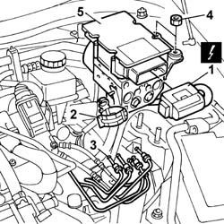

3340A12 A.B.S. hydraulic and electronic CONTROL UNIT - R.R. - Includes bleeding air
- Path
- Procedures > 33 BRAKES > 3340 ANTI-LOCK BRAKING SYSTEM (A.B.S.) > 3340A ABS check/adjustment devices > 3340A12 A.B.S. hydraulic and electronic CONTROL UNIT - R.R. - Includes bleeding air
- Kind
- repair procedure (removal / refitting; the operation number is the code)
- Applies to
- all engines; all production periods
- Interactive page
- https://sloeber94.github.io/elrnDB-lThss/en/#/78638
Applies to: all engines; all production periods
 Removing
Removing
 Refitting
Refitting- Position the vehicle on a lift.
- Disconnect the negative battery terminal.
See in Op. 7055B54 PROTECTION/GUARD under engine - R.R.
See in Op. 7040D50 ENGINE COMPARTMENT UPPER SOUND INSULATION SHIELD - R.R.
- Using a suitable syringe, draw off the brake/clutch fluid from the reservoir.
Applies to: engines: 2.4 20V, 3.0 V6; all production periods
Applies to: engines: 2.0 TB; all production periods
See in Op. 1048A21 AIR INLET HOSE FROM INTAKE TO FILTER - R.R.
-
Applies to: engines: 2.4 JTD 20V; all production periods
See in Op. 1016A10 SOUND-PROOFING COVER - R.R.
See in Op. 1048B44 RIGID air supply PIPE from heat exchanger to intake manifold - R.R.
Applies to: all engines; all production periods
1. Disconnect the electrical connection for the brake system electronic control unit (NFR).
 | Description | Connector |
|---|---|---|
1 | Braking system control unit (NFR) | M051 |
2. Release the ABS brake pipes from the band.
3. Undo the nuts for the pipe connectors from the ABS hydraulic and electronic control unit.
 | Description | Code | Function |
|---|---|---|---|
. | Spanner | 1.860.697.000 | Spanner for ABS fluid connectors |
4. Undo the retaining nuts.
5. Remove the ABS hydraulic and electronic control unit.

Applies to: all engines; all production periods
Refitting
Removing- Position the hydraulic and electronic control unit in the housing and secure it tightening the nuts to the recommended torque.
 | Value - daNm | Fastening | Component | Ø |
|---|---|---|---|---|
. | 1.5 | Nuts | HYDRAULIC AND ELECTRONIC CONTROL UNIT | M8 |
- Connect the pipes to the ABS hydraulic and electronic control unit and secure them tightening the connectors to the recommended torque.
| Value - daNm | Fastening | Component | Ø |
|---|---|---|---|---|
. | 1.4 | Connector | PIPE FROM PUMP TO HYDRAULIC CONTROL UNIT | M10 |
- Secure the pipes using the band.
- Connect the electrical connection for the brake system electronic control unit (NFR).
| Description | Connector |
|---|---|---|
. | Braking system control unit (NFR) | M051 |
Applies to: engines: 2.4 JTD 20V; all production periods
See in Op. 1048A50 air inlet pipe to turbocharger - r + r
See in Op. 1048A56 UPPER RESONATOR - R.R.
See in Op. 1048B44 RIGID air supply PIPE from heat exchanger to intake manifold - R.R.
Applies to: engines: 2.4 20V, 3.0 V6; all production periods
Applies to: engines: 2.0 TB; all production periods
See in Op. 1048A50 air inlet pipe to turbocharger - r + r
-
See in Op. 1048A21 AIR INLET HOSE FROM INTAKE TO FILTER - R.R.
Applies to: all engines; all production periods
See in Op. 0010T64 Brake and/or clutch fluid - Check level and top up, if necessary
-
See in Op. 0010T65 HYDRAULIC BRAKING SYSTEM - BLEED AIR
-
See in Op. 7055B54 PROTECTION/GUARD under engine - R.R.
- Connect the negative battery terminal.
- Remove the vehicle from the lift.
Topics linked from this page (10)
- 0010T64 Brake and/or clutch fluid - Check level and top up, if necessary
- 0010T65 HYDRAULIC BRAKING SYSTEM - BLEED AIR
- 1016A10 SOUND-PROOFING COVER - R.R.
- 1048A56 UPPER RESONATOR - R.R.
- 1048A21 AIR INLET HOSE FROM INTAKE TO FILTER - R.R.
- 1048A28 vacuum air circuit resonator pipe - r+r
- 1048A50 air inlet pipe to turbocharger - r + r
- 1048B44 RIGID air supply PIPE from heat exchanger to intake manifold - R.R.
- 7040D50 ENGINE COMPARTMENT UPPER SOUND INSULATION SHIELD - R.R.
- 7055B54 PROTECTION/GUARD under engine - R.R.
Topics that link to this page (11)
- F20 ABS NOT WORKING PROPERLY
- F46 THE ASR FUNCTION IS NOT DEACTIVATED
- K68 ESP WARNING LIGHT IN CONTROL PANEL ON
- 3330C10 MASTER CYLINDER (PUMP) - R.R. - Bleed air from brakes separately
- 3330D04 BRAKE SERVO - R.R. - Includes separation from master cylinder (pump) - for versions with Adaptive Cruise Control (A.C.C.).
- 3330D10 BRAKE SERVO - R.R.
- 3340B52 Rigid PIPE (one), from master cylinder (pump) to A.B.S. hydraulic control unit - R.R.
- 3340B55 RIGID PIPE from hydraulic CONTROL UNIT to LEFT FRONT BRAKE - R.R.
- 3340B56 RIGID PIPE from hydraulic CONTROL UNIT to RIGHT FRONT BRAKE - R.R.
- 3340B57 RIGID PIPE from hydraulic CONTROL UNIT to RIGHT FRONT BRAKE - R.R. with power unit removed
- 3340B62 RIGID PIPE (one), left or right, from hydraulic control unit to rear brakes - R.R.